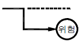
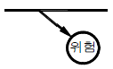
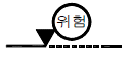
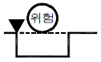
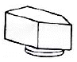
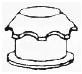
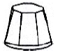
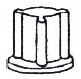
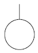
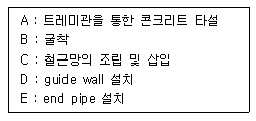

건설안전산업기사 (2014-03-02 기출문제)
1과목: 산업안전관리론
1. 다음 중 무재해운동 추진기법에 있어 지적확인의 특성을 가장 적절하게 설명한 것은?
- 오관의 감각기관을 총동원하여 작업의 정확성과 안전을 확인한다.
- 참여자 전원의 스킨십을 통하여 연대감, 일체감을 조성할 수 있고 느낌을 교류한다.
- 비평을 금지하고, 자유로운 토론을 통하여 독창적인 아이디어를 끌어낼 수 있다.
- 작업 전 5분간의 미팅을 통하여 시나리오상의 역할을 연기하여 체험하는 것을 목적으로 한다.
(정답률: 72%)

2. 인간관계 메커니즘 중에서 다른 사람으로부터의 판단이 나 행동을 무비판적으로 논리적, 사실적 근거 없이 받아들 이는 것을 무엇이라 하는가?
- 모방(imitation)
- 암시(suggestion)
- 투사(projection)
- 동일화(identification)
(정답률: 55%)
3. 다음 중 재해조사시의 유의사항으로 가장 적절하지 않은 것은?
- 사실을 수집한다.
- 사람, 기계설비, 양면의 재해요인을 모두 도출한다.
- 객관적인 입장에서 공정하게 조사하며, 조사는 2인 이상이 한다.
- 목격자의 증언과 추측의 말을 모두 반영하여 분석하고, 결과를 도출한다.
(정답률: 78%)
4. 다음 중 안전교육의 3단계에서 생활지도, 작업동작지도 등을 통한 안전의 습관화를 위한 교육을 무엇이라 하는가?
- 지식교육
- 기능교육
- 태도교육
- 인성교육
(정답률: 77%)
5. 다음 중 학습의 목적의 3요소에 해당하지 않는 것은?
- 주제
- 대상
- 목표
- 학습정도
(정답률: 48%)
6. 다음 중 헤드십에 관한 내용으로 볼 수 없는 것은?
- 부하와의 사회적 간격이 좁다.
- 지휘의 형태는 권위주의적이다.
- 권한의 부여는 조직으로부터 위임받는다.
- 권한에 대한 근거는 법적 또는 규정에 의한다.
(정답률: 68%)
7. 다음 중 안전대의 각 부품(용어)에 관한 설명으로 틀린 것은?
- “안전그네”란 신체지지의 목적으로 전신에 착용하는 띠 모양의 것으로서 상체 등 신체 일부분만 지지하는 것은 제외한다.
- “버클”이란 벨트 또는 안전그네와 신축조절기를 연결하기 위한 사각형의 금속 고리를 말한다.
- “U자걸이”란 안전대의 죔줄을 구조물 등에 U자 모양으로 돌린 뒤 훅 또는 카라비너를 D링에, 신축조절기를 각링 등에 연결하는 걸이 방법을 말한다.
- “1개걸이”란 죔줄의 한쪽 끝을 D링에 고정시키고 훅 또는 카라비너를 구조물 또는 구명줄에 고정시키는 걸이 방법을 말한다.
(정답률: 53%)
8. 산업안전보건법령에 따라 건설현장에서 사용하는 크레인, 리프트 및 곤돌라는 최초로 설치한 날부터 얼마마다 안전검사를 실시하여야 하는가?
- 6개월
- 1년
- 2년
- 3년
(정답률: 72%)
9. 무재해운동의 추진에 있어 무재해운동을 개시한 날로부터 며칠 이내에 무재해 운동 개시신청서를 관련 기관에 제출하여야 하는가?
- 4일
- 7일
- 14일
- 30일
(정답률: 51%)
10. 다음 중 부주의 현상을 그림으로 표시한 것으로 의식의 우회를 나타낸 것은?
- 의식의 흐름-

- 의식의 흐름-

- 의식의 흐름-

- 의식의 흐름-

(정답률: 61%)
11. 산업안전보건법령상 특별안전⋅보건교육에 있어 대상 작업별 교육내용 중 밀폐공간에서의 작업에 대한 교육내용과 가장 거리가 먼 것은? (단, 기타 안전⋅보건관리에 필요한 사항은 제외한다.)
- 산소농도측정 및 작업환경에 관한 사항
- 유해물질의 인체에 미치는 영향
- 보호구 착용 및 사용방법에 관한 사항
- 사고시의 응급처치 및 비상시 구출에 관한 사항
(정답률: 69%)
12. 다음 중 매슬로우의 욕구 5단계 이론에서 최종 단계에 해당하는 것은?
- 존경의 욕구
- 성장의 욕구
- 자아실현 욕구
- 생리적 욕구
(정답률: 82%)
13. 재해손실비 중 직접 손실비에 해당하지 않는 것은?
- 요양급여
- 휴업급여
- 간병급여
- 생산손실급여
(정답률: 63%)
14. 버드(Bird)는 사고가 5개의 연쇄반응에 의하여 발생되는 것으로 보았다. 다음 중 재해 발생의 첫 단계에 해당하는 것은?
- 개인적 결함
- 사회적 환경
- 전문적 관리의 부족
- 불안전한 행동 및 불안전한 상태
(정답률: 47%)
15. 산업안전보건법령상 안전⋅보건표지의 종류에 있어 “안전모 착용”은 어떤 표지에 해당하는가?
- 경고 표지
- 지시 표지
- 안내 표지
- 관계자외출입금지
(정답률: 79%)
16. 다음 중 시행착오설에 의한 학습법칙에 해당하지 않은 것은?
- 효과의 법칙
- 준비성의 법칙
- 연습의 법칙
- 일관성의 법칙
(정답률: 61%)
17. 어떤 사업장의 종합재해지수가 16.95이고, 도수율이 20.83이라면 강도율은 약 얼마인가?
- 20.45
- 15.92
- 13.79
- 10.54
(정답률: 50%)
18. 다음 중 안전심리의 5대 요소에 해당하는 것은?
- 기질(temper)
- 지능(intelligence)
- 감각(sense)
- 환경(environment)
(정답률: 62%)
19. 다음 중 교육훈련의 학습을 극대화시키고, 개인의 능력 개발을 극대화시켜 주는 평가방법이 아닌 것은?
- 관찰법
- 배제법
- 자료분석법
- 상호평가법
(정답률: 69%)
20. 다음 중 산업안전보건법령에서 정한 안전보건관리규정의 세부내용으로 가장 적절하지 않은 것은?
- 산업안전보건위원회의 설치⋅운영에 관한 사항
- 사업주 및 근로자의 재해 예방 책임 및 의무 등에 관한 사항
- 근로자 건강진단, 작업환경측정의 실시 및 조치절차 등에 관한 사항
- 산업재해 및 중대산업사고의 발생시 손실비용 산정 및 보상에 관한 사항
(정답률: 56%)
2과목: 인간공학 및 시스템안전공학
21. 조도가 400럭스인 위치에 놓인 흰색 종이 위에 짙은 회색의 글자가 씌어져 있다. 종이의 반사율 80%이고, 글자의 반사율은 40%라 할 때 종이와 글자의 대비는 얼마인가?
- -100%
- -50%
- 50%
- 100%
(정답률: 53%)
22. Chapanis의 위험분석에서 발생이 불가능한(Impossible) 경우의 위험발생률은?
- 10-2/day
- 10-4/day
- 10-6/day
- 10-8/day
(정답률: 63%)
23. 다음 통제용 조종장치의 형태 중 그 성격이 다른 것은?
- 노브(knob)
- 푸시 버튼(push button)
- 토글 스위치(toggle switch)
- 로터리선택스위치(rotary select switch)
(정답률: 58%)
24. 다음 중 결함수분석법(FTA)에 관한 설명으로 틀린 것은?
- 최초 Watson이 군용으로 고안하였다.
- 미니멀 패스(Minimal path sets)를 구하기 위해서는 미니멀 컷(Minimal Cut sets)의 상대성을 이용한다.
- 정상사상의 발생확률을 구한 다음 FT를 작성한다.
- AND 게이트의 확률 계산은 각 입력사상의 곱으로 한다.
(정답률: 52%)
25. 다음 중 인간-기계 시스템에서 기계에 비교한 인간의 장점과 가장 거리가 먼 것은?
- 완전히 새로운 해결책을 찾아낸다.
- 여러 개의 프로그램된 활동을 동시에 수행한다.
- 다양한 경험을 토대로 하여 의사결정을 한다.
- 상황에 따라 변화하는 복잡한 자극 형태를 식별한다.
(정답률: 73%)
26. 다음 중 공간 배치의 원칙에 해당되지 않는 것은?
- 중요성의 기능
- 다양성의 원칙
- 기능별 배치의 원칙
- 사용빈도의 원칙
(정답률: 64%)
27. 다음 중 신호의 강도, 진동수에 의한 신호의 상대 식별등 물리적 자극의 변화여부를 감지할 수 있는 최소의 자극 범위를 의미하는 것은?
- Chunking
- Stimulus Range
- SDT(Signal Detection Theory)
- JND(Just Noticeable Difference)
(정답률: 47%)
28. 다음 중 형상 암호화된 조종장치에서 “이산 멈춤 위치용” 조종장치로 가장 적절한 것은?




(정답률: 60%)
29. 다음 중 보전용 자재에 관한 설명으로 가장 적절하지 않은 것은?
- 소비속도가 느려 순환사용이 불가능하므로 폐기시켜야 한다.
- 휴지손실이 적은 자재는 원자재나 부품의 형태로 재고를 유지한다.
- 열화상태를 경향검사로 예측이 가능한 품목은 적시 발주법을 적용한다.
- 보전의 기술수준, 관리수준이 재고량을 좌우한다.
(정답률: 64%)
30. 인간 오류의 분류에 있어 원인에 의한 분류 중 작업자가 기능을 움직이려 해도 필요한 물건, 정보, 에너지 등의 공급이 없는 것처럼 작업자가 움직이려 해도 움직일 수 없어서 발생하는 오류는?
- primary error
- secondary error
- command error
- omission error
(정답률: 48%)
31. 세발자전거에서 각 바퀴의 신뢰도가 0.9일 때 이 자전거의 신뢰도는 얼마인가?
- 0.729
- 0.810
- 0.891
- 0.999
(정답률: 44%)
32. System 요소 간의 link 중 인간 커뮤니케이션 Link에 해당되지 않는 것은?
- 방향성 Link
- 통신계 Link
- 시각 Link
- 컨트롤 Link
(정답률: 47%)
33. 1cd의 점광원에서 1m 떨어진 곳에서의 조도가 3 lux이었다. 동일한 조건에서 5m 떨어진 곳에서의 조도는 약 몇 lux 인가?
- 0.12
- 0.22
- 0.36
- 0.56
(정답률: 46%)
34. 다음 중 위험을 통제하는데 있어 취해야 할 첫 단계 조사는?
- 작업원을 선발하여 훈련한다.
- 덮개나 격리 등으로 위험을 방호한다.
- 설계 및 공정계획시에 위험을 제거토록 한다.
- 점검과 필요한 안전보호구를 사용하도록 한다.
(정답률: 55%)
35. FT도에서 사용되는 다음 기호의 의미로 옳은 것은?

- 결함사상
- 기본사상
- 통상사상
- 제외사상
(정답률: 71%)
36. 다음 중 음(音)의 크기를 나타내는 단위로만 나열된 것은?
- dB, nit
- phon, lb
- dB, psi
- phon, dB
(정답률: 72%)
37. 다음 중 일반적인 수공구의 설계원칙으로 볼 수 없는 것은?
- 손목을 곧게 유지한다.
- 반복적인 손가락 동작을 피한다.
- 사용이 용이한 검지만을 주로 사용한다.
- 손잡이는 접촉면적을 가능하면 크게 한다.
(정답률: 68%)
38. 다음 중 위험 및 운전성 분석(HAZOP) 수행에 가장 좋은 시점은 어느 단계인가?
- 구상단계
- 생산단계
- 설치단계
- 개발단계
(정답률: 34%)
39. 성인이 하루에 섭취하는 음식물의 열량 중 일부는 생명을 유지하기 위한 신체기능에 소비되고, 나머지는 일을 한다거나 여가를 즐기는데 사용될 수 있다. 이 중 생명을 유지하기 위한 최소한의 대사량을 무엇이라 하는가?
- BMR
- RMR
- GSR
- EMG
(정답률: 47%)
40. 다음 중 신체와 환경간의 열교환 과정을 가장 올바르게 나타낸 식은?(단, W는 일, M은 대사, S는 열 축적, R은 복사, C는 대류, E는 증발, Clo는 의복의 단열률이다.)
- W = (M + S) ± R ± C - E
- S = (M - W) ± R ± C - E
- W = Clo × (M - S) ± R ± C - E
- S = Clo × (M - W) ± R ± C - E
(정답률: 59%)
3과목: 건설시공학
41. 경량콘크리트(Lightweight Concrete)에 대한 설명 중 옳지 않은 것은?
- 기건비중은 2.0 이하, 단위중량은 1700kg/m3 정도이다.
- 열전도율은 보통 콘크리트와 유사하나 단열성은 우수하다.
- 물과 접하는 지하실 등의 공사에는 부적합하다.
- 경량이어서 인력에 의한 취급이 용이하고, 가공도 쉽다.
(정답률: 58%)
42. 철공공사의 철골부재 용접에서 용접 결함이 아닌 것은?
- 언더컷(under cut)
- 오버랩(overlap)
- 루트(root)
- 블로우홀(blow hole)
(정답률: 73%)
43. 공사계획에 있어서 공법 선택 시 고려할 사항이 아닌 것은?
- 품질 확보
- 공기 준수
- 작업의 안전성 확보와 제3자 재해의 방지
- 공구 분할의 결정
(정답률: 72%)
44. 바닥판, 보 밑 거푸집 설계에서 고려하는 하중에 속하지 않는 것은?
- 굳지 않은 콘크리트 중량
- 작업하중
- 충격하중
- 측압
(정답률: 70%)
45. 말뚝의 이음 공법 중 강성이 가장 우수한 방식은?
- 장부식 이음
- 충전식 이음
- 리벳식 이음
- 용접식 이음
(정답률: 74%)
46. 용접작업에서 용접봉을 용접방향에 대하여 서로 엇갈리게 움직여서 용가금속을 용착시키는 운봉방법은?
- 단속용접
- 개선
- 레그
- 위빙
(정답률: 78%)
47. 철근콘크리트 구조물의 내구성 저하 요인과 거리가 먼 것은?
- 백화
- 염해
- 중성화
- 동해
(정답률: 55%)
48. 보기는 지하연속벽(slurry wall)공법의 시공내용이다. 그 순서를 알맞게 연결한 것은?

- A→B→C→E→D
- D→B→E→C→A
- B→D→E→C→A
- B→D→C→E→A
(정답률: 60%)
49. 철골공사 중 고장력볼트접합에 대한 설명 중 옳지 않은 것은?
- 고장력볼트란 항복강도 700MPa 이상, 인장강도 900MPa 이상인 볼트다.
- 접합방식의 종류는 마찰접합, 지압접합, 인장접합이 있다.
- 볼트의 호칭지름에 의한 분류는 D16, D20, D22, D24로 한다.
- 조임은 토크관리법과 너트회전법에 따른다.
(정답률: 69%)
50. 주문받은 건설업자가 대상계획의 금융, 토지조달, 설계시공 등 기타 모든 요소를 포괄한 도급계약 방식은?
- 실비정산 보수가산도급
- 턴키도급(turn-key)
- 정액도급
- 공동도급(joint venture)
(정답률: 78%)
51. 콘크리트의 측압에 대한 설명 중 옳지 않은 것은?
- 부어넣기 속도가 빠를수록 측압이 크다.
- 콘크리트의 비중이 클수록 측압이 크다.
- 콘크리트의 온도가 높을수록 측압이 적다.
- 진동기를 사용하여 다질수록 측압이 적다.
(정답률: 70%)
52. 거푸집 중 슬라이딩 폼에 대한 설명으로 옳지 않은 것은?
- 곡물창고, 굴뚝, 사일로, 교각 등에 사용한다.
- 공기단축이 가능하다.
- 내외부에 비계발판을 설치하여 시공한다.
- 연속적으로 콘크리트를 부어 넣어 일체성을 확보할 수 있다.
(정답률: 58%)
53. 발주자는 시공자에게 시공을 위임하고 실제로 시공에 소요된 비용, 즉 공사실비(cost)와 미리 정해 놓은 보수 (fee)를 시공자가 받는 방식으로 발주자, 컨설턴트 또는 엔지니어 및 시공자 3자가 협의하여 공사비를 결정하는 도급 계약 방식은?
- 실비정산 보수가산계약
- 공동도급 계약방식
- 파트너링 방식
- 분할 도급계약방식
(정답률: 66%)
54. 가설공사 중 직접가설 공사 항목이 아닌 것은?
- 시험설비
- 규준틀 설치
- 비계 설치
- 건축물 보양 설비
(정답률: 57%)
55. 트렌치 컷 공법에 관한 설명으로 옳은 것은?
- 온통파기를 할 수 없을 때, 히빙현상이 예상될 때 효과적이다.
- 중앙부의 흙을 먼저 파내고 다음에 주위 부분의 흙을 파내는 공법이다.
- 면적이 넓을수록 효과적이다.
- 시공 깊이는 안전상 10m 내외로 한정된다.
(정답률: 42%)
56. 지반개량공법의 종류에 속하지 않는 것은?
- 탈수다짐법
- 치환법
- 표준관입시험법
- 약액주입법
(정답률: 70%)
57. 위치한 지면보다 낮은 우물통과 같은 협소한 장소의 흙을 퍼올리는 장비로서 연한 지반에는 가능하나 경질층에는 부적당한 장비는?
- 클램쉘(clam shell)
- 트렉터셔블(tractor shovel)
- 드래그라인(drag line)
- 앵글도저(angle dozer)
(정답률: 65%)
58. 콘크리트 시공에 있어서 다지거나 진동을 주는 목적으로 가장 타당한 것은?
- 점도를 증가시켜 준다.
- 시멘트를 절약시킨다.
- 동결을 방지하고 경화를 촉진시킨다.
- 콘크리트를 거푸집 구석구석까지 충전시킨다.
(정답률: 79%)
59. 철근 피복두께에 대한 설명 중 옳지 않은 것은?
- 철근 피복두께는 콘크리트의 표면에서 가장 가까운 주근의 표면까지의 거리이다.
- 철근을 피복하는 목적은 내구성, 내화성, 콘크리트 타설시 유동성 확보 등에 있다.
- 흙에 접하는 D16 이하의 철근을 사용한 내력벽의 최소피복두께는 40mm이다.
- 과다한 피복두께는 콘크리트 균열을 유발시켜 구조물의 사용수명을 감소시킨다.
(정답률: 43%)
60. 단가 도급계약 제도에 대한 설명으로 옳지 않은 것은?
- 시급한 공사인 경우 계약을 간단히 할 수 있다.
- 설계변경으로 인한 수량증가의 계산이 어렵고 일시도급보다 복잡하다.
- 공사비가 높아질 염려가 있다.
- 총공사비를 예측하기 힘들다.
(정답률: 65%)
4과목: 건설재료학
61. 콘크리트 골재에 요구되는 성질로 옳지 않은 것은?
- 골재는 청정, 내구적인 것으로 유해량의 먼지, 흙, 유기불순물 등을 포함하지 않을 것
- 골재의 강도는 콘크리트 중의 경화시멘트 페이스트의 강도 이상일 것
- 골재의 입형은 세장하고, 표면이 매끈할 것
- 입도는 조립에서 세립까지 연속적으로 균등히 혼합되어 있을 것
(정답률: 64%)
62. 에폭시 도장에 대한 설명 중 옳지 않은 것은?
- 내마모성은 우수하고 수축, 팽창이 거의 없다.
- 내약품성, 내수성, 접착력이 우수하다.
- 자외선에 특히 강하여 외부에 주로 사용한다.
- Non-Slip 효과가 있다.
(정답률: 71%)
63. 접착제를 사용할 때의 주의사항으로 옳지 않은 것은?
- 피착제의 표면은 가능한 한 습기가 없는 건조상태로 한다.
- 용제, 희석제를 사용할 경우 과도하게 희석시키지 않도록 한다.
- 용제성의 접착제는 도포 후 용제가 휘발한 적당한 시간에 접착시킨다.
- 접착처리 후 일정한 시간 내에는 가능한 한 압축을 피해야 한다.
(정답률: 67%)
64. 목재의 방화법과 가장 관계가 먼 것은?
- 부재의 소단면화
- 불연성 막이나 층에 의한 피복
- 방화페인트의 도포
- 난연처리
(정답률: 59%)
65. 방수공사에서 아스팔트 품질 결정요소와 가장 거리가 먼 것은?
- 침입도
- 신도
- 연화점
- 마모도
(정답률: 39%)
66. 알루미늄과 그 합금 재료의 일반적인 성질에 관한 설명 중 옳지 않은 것은?
- 산, 알칼리에 강하다.
- 내화성이 적다.
- 열⋅전기 전도성이 크다.
- 비중이 철의 1/3이다.
(정답률: 74%)
67. 중용열 포틀랜드시멘트에 대한 설명 중 옳지 않은 것은?
- 수화열이 적어 한중공사에 적합하다.
- 단기강도는 조강포틀랜드시멘트보다 작다.
- 내구성이 크며 장기강도가 크다.
- 방사선 차단용 콘크리트에 적합하다.
(정답률: 46%)
68. 콘크리트 배합(mix proportion) 중 실제 현장골재의 표면수⋅흡수량 및 입도상태를 고려하여 시방배합을 현장상태에 적합하게 보정하는 배합은?
- 현장배합(job mix)
- 용적배합(volume mix)
- 중량배합(weight mix)
- 계획배합(specified mix)
(정답률: 75%)
69. 열가소성 수지(thermoplastic resin)에 해당하는 것은?
- 페놀수지
- 아크릴수지
- 멜라민수지
- 폴리우레탄수지
(정답률: 50%)
70. 암석이 가장 쪼개지기 쉬운 면을 말하며 절리보다 불분명하지만 방향이 대체로 일치되어 있는 것은?
- 석리
- 입상조직
- 석목
- 선상조직
(정답률: 36%)
71. 각종 미장재료에 대한 설명으로 옳지 않은 것은?
- 석고플라스터는 가열하면 결정수를 방출하여 온도상승을 억제하기 때문에 내화성이 있다.
- 바라이트 모르타르는 방사선 방호용으로 사용된다.
- 돌로마이트플라스터는 수축률이 크고 균열이 쉽게 발생한다.
- 혼합석고플라스터는 약산성이며 석고라스 보드에 적합하다.
(정답률: 49%)
72. 콘크리트의 건조수축, 구조물의 균열 및 변형을 방지할 목적으로 사용되는 혼화재료는?
- 지연제(Retarder)
- 플라이애시(Fly ash)
- 실리카흄(Silica fume)
- 팽창제(Expansive producing admixtures)
(정답률: 66%)
73. 목재의 강도에 관한 설명 중 옳지 않은 것은?
- 심재의 강도가 변재보다 크다.
- 함수율이 높을수록 강도가 크다.
- 추재의 강도가 춘재보다 크다.
- 절건비중이 클수록 강도가 크다.
(정답률: 57%)
74. 건축재료 중 점토에 대한 설명으로 옳지 않은 것은?
- 양질의 점토는 습윤 상태에서 현저한 가소성을 나타낸다.
- 점토는 수성암에서만 생성된다.
- 점토의 주성분은 실리카와 알루미나이다.
- 점토의 압축강도는 인장강도의 약 5배 정도이다.
(정답률: 52%)
75. ALC(Autoclave Lightweight Concrete) 제품에 대한 설명 중 옳지 않은 것은?
- 대형판 제조가 불가능하다.
- 시공이 용이하고 내화성이 크다.
- 제품 발포제로서 알루미늄 분말을 사용한다.
- 절건상태에서 비중이 0.45~0.55 정도이다.
(정답률: 57%)
76. 강(鋼)에 함유된 탄소 성분이 강재성질에 끼치는 영향이 아닌 것은?
- 강도의 증감
- 연율(신율)의 증감
- 내산성의 증감
- 경도의 증감
(정답률: 49%)
77. 실적률이 큰 골재를 사용한 콘크리트에 대한 설명 중 옳지 않은 것은?
- 단위 시멘트량을 줄일 수 있다.
- 콘크리트의 마모저항의 증대를 기대할 수 있다.
- 콘크리트의 내구성 및 강도를 높일 수 있다.
- 콘크리트의 투수성이나 흡습성이 커진다.
(정답률: 50%)
78. 목재 가공품 중 판재와 각재를 접착하여 만든 것으로보, 기둥, 아치, 트러스 등의 구조부재로 사용되는 것은?
- 파키토 패널
- 집성목재
- 파티클 보드
- 코펜하겐 리브
(정답률: 67%)
79. 속빈 콘크리트 블록(KS F 4002)이 성능을 평가하는 시험항목과 거리가 먼 것은?
- 기건 비중 시험
- 전 단면적에 대한 압축강도 시험
- 내충격성 시험
- 흡수율 시험
(정답률: 47%)
80. 강재의 인장시험에서 탄성에서 소성으로 변하는 경계는?
- 비례한계점
- 변형경화점
- 항복점
- 인장강도점
(정답률: 66%)
5과목: 건설안전기술
81. 거푸집의 일반적인 조립순서를 옳게 나열한 것은?
- 기둥 (→)보받이 내력벽 (→)큰보 (→)작은보 (→)바닥판 (→)내벽 (→)외벽
- 외벽 (→)보받이 내력벽 (→)큰보 (→)작은보 (→)바닥판 (→)내력 (→)기둥
- 기둥 (→)보받이 내력벽 (→)작은보 (→)큰보 (→)바닥판 (→)내벽 (→)외벽
- 기둥 (→)보받이 내력벽 (→)바닥판 (→)큰보 (→)작은보 (→)내벽 (→)외벽
(정답률: 58%)
82. 산업안전보건기준에 관한 규칙에 따른 작업장 근로자의 안전한 통행을 위하여 통로에 설치하여야 하는 조명 시설의 조도기준(Lux)는?
- 30 Lux 이상
- 75 Lux 이상
- 150 Lux 이상
- 300 Lux 이상
(정답률: 67%)
83. 산업안전보건기준에 관한 규칙에 따른 굴착면의 기울기 기준으로 옳지 않은 것은?
- 경암 = 1 : 0.3
- 연암 = 1 : 0.5
- 풍화암 = 1 : 0.8
- 보통흙(건지) = 1 : 1.5 ~ 1 : 1.8
(정답률: 61%)
84. 벽체 콘크리트 타설시 거푸집이 터져서 콘크리트가 쏟아진 사고가 발생하였다. 다음 중 이 사고의 주요 원인으로 추정할 수 있는 것은?
- 콘크리트를 부어 넣는 속도가 빨랐다.
- 거푸집에 박리제를 다량 도포했다.
- 대기 온도가 매우 높았다.
- 시멘트 사용량이 많았다.
(정답률: 58%)
85. 건설기계에 관한 설명 중 옳은 것은?
- 백호는 장비가 위치한 지면보다 높은 곳의 땅을 파는 데에 적합하다.
- 바이브레이션 롤러는 노반 및 소일시멘트 등의 다지기에 사용된다.
- 파워쇼벨은 지면에 구멍을 뚫어 낙하해머 또는 디젤 해머에 의해 강관말뚝, 널말뚝 등을 박는데 이용된다.
- 가이데릭은 지면을 일정한 두께로 깍는 데에 이용된다.
(정답률: 52%)
86. 비계발판의 크기를 결정하는 기준은?
- 비계의 제조회사
- 재료의 부식 및 손상정도
- 지점의 간격 및 작업시 하중
- 비계의 높이
(정답률: 55%)
87. 콘크리트의 재료분리현상 없이 거푸집 내부에 쉽게 타설 할 수 있는 정도를 나타내는 것은?
- Workability
- Bleeding
- Consistency
- Finishability
(정답률: 60%)
88. 굴착공사에서 굴착 깊이가 5m, 굴착 저면의 폭이 5m인 경우 양단면 굴착을 할 때 굴착부 상단면의 폭은? (단, 굴착면의 기울기는 1:1로 한다.)
- 10m
- 15m
- 20m
- 25m
(정답률: 55%)
89. 콘크리트를 타설할 때 거푸집에 작용하는 콘크리트 측압에 영향을 미치는 요인과 가장 거리가 먼 것은?
- 콘크리트 타설 속도
- 콘크리트 타설 높이
- 콘크리트의 강도
- 콘크리트 단위용적질량
(정답률: 63%)
90. 화물을 적재하는 경우에 준수하여야 하는 사항으로 옳지 않은 것은?
- 침하 우려가 없는 튼튼한 기반 위에 적재할 것
- 건물의 칸막이나 벽 등이 화물의 압력에 견딜 만큼의 강도를 지니지 아니한 경우에는 칸막이나 벽에 기대어 적재하지 않도록 할 것
- 불안정할 정도로 높이 쌓아 올리지 말 것
- 편하중이 발생하도록 쌓을 것
(정답률: 69%)
91. 철골구조에서 강풍에 대한 내력이 설계에 고려되었는지 검토를 실시하지 않아도 되는 건물은?
- 높이 30m인 건물
- 연면적당 철골량이 45kg인 건물
- 단면구조가 일정한 구조물
- 이음부가 현장용접인 건물
(정답률: 59%)
92. 정기안전점검 결과 건설공사의 물리적⋅기능적 결함 등이 발견되어 보수⋅보강 등의 조치를 하기 위하여 필요한 경우에 실시하는 것은?
- 자체안전점검
- 정밀안전점검
- 상시안전점검
- 품질관리점검
(정답률: 64%)
93. 가설계단 및 계단참의 하중에 대한 지지력은 최소 얼마 이상이어야 하는가?
- 300 kg/m2
- 400 kg/m2
- 500 kg/m2
- 600 kg/m2
(정답률: 40%)
94. 토사붕괴 재해의 발생 원인으로 보기 어려운 것은?
- 부석의 점검을 소홀히 했다.
- 지질조사를 충분히 하지 않았다.
- 굴착면 상하에서 동시작업을 했다.
- 안식각으로 굴착했다.
(정답률: 63%)
95. 건설작업용 리프트에 대하여 바람에 의한 붕괴를 방지하는 조치를 한다고 할 때 그 기준이 되는 최소 풍속은?
- 순간 풍속 30m/sec 초과
- 순간 풍속 35m/sec 초과
- 순간 풍속 40m/sec 초과
- 순간 풍속 45m/sec 초과
(정답률: 55%)
96. 추락에 의한 위험방지를 위해 조치해야 할 사항과 거리가 먼 것은?
- 추락방지망 설치
- 안전난간 설치
- 안전모 착용
- 투하설비 설치
(정답률: 67%)
97. 리프트(Lift)의 안전장치에 해당하지 않는 것은?
- 권과방지장치
- 비상정지장치
- 과부하방지장치
- 조속기
(정답률: 63%)
98. 강관비계 중 단관비계의 조립간격(벽체와의 연결간격)으로 옳은 것은?
- 수직방향 : 6m, 수평방향 : 8m
- 수직방향 : 5m, 수평방향 : 5m
- 수직방향 : 4m, 수평방향 : 6m
- 수직방향 : 8m, 수평방향 : 6m
(정답률: 59%)
99. 작업발판 및 통로의 끝이나 개구부로서 근로자가 추락할 위험이 있는 장소에 설치하는 것과 거리가 먼 것은?
- 교차가새
- 안전난간
- 울타리
- 수직형 추락방망
(정답률: 50%)
100. 일반적으로 사면이 가장 위험한 경우는 어느 때인가?
- 사면이 완전 건조 상태일 때
- 사면의 수위가 서서히 상승할 때
- 사면이 완전 포화 상태일 때
- 사면의 수위가 급격히 하강할 때
(정답률: 65%)